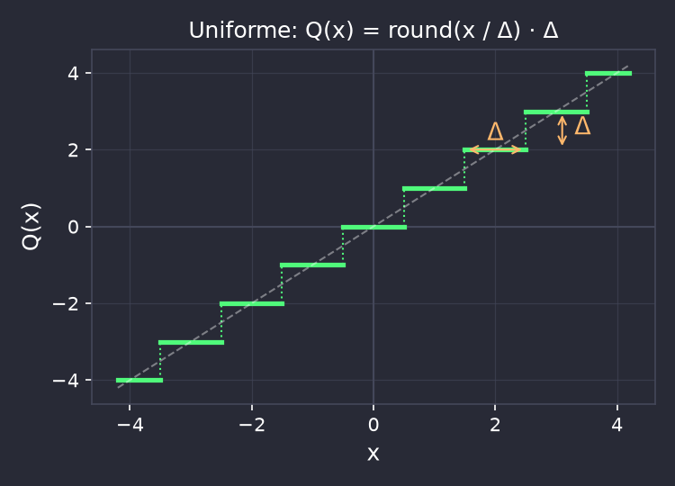
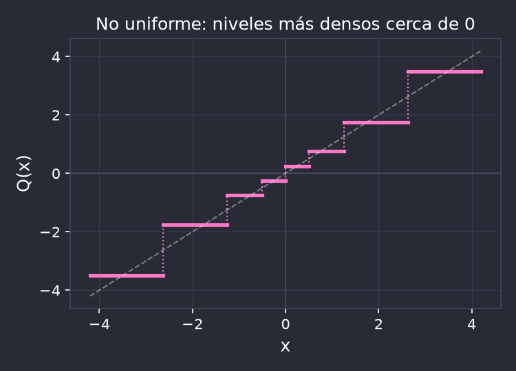
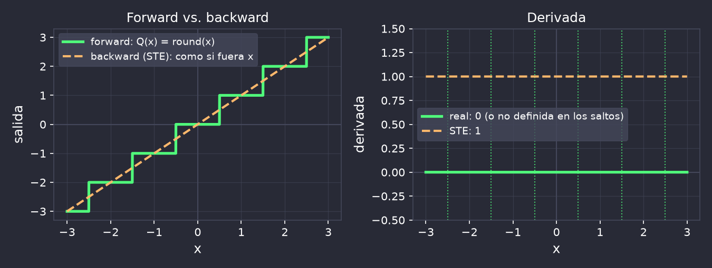
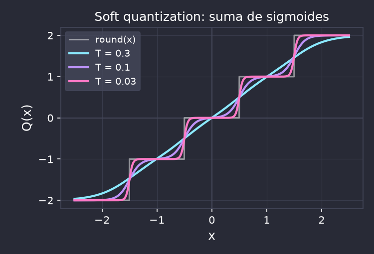
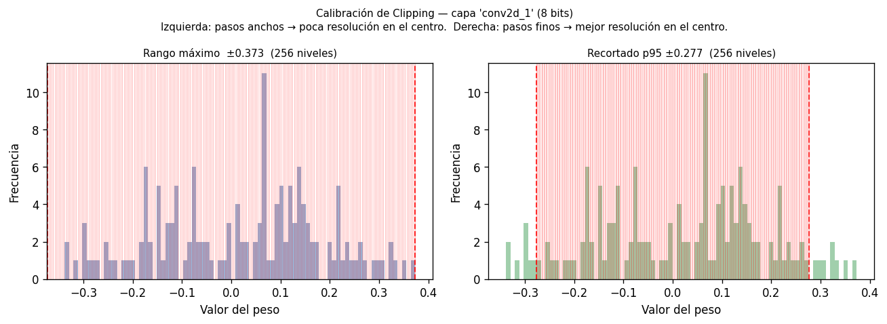
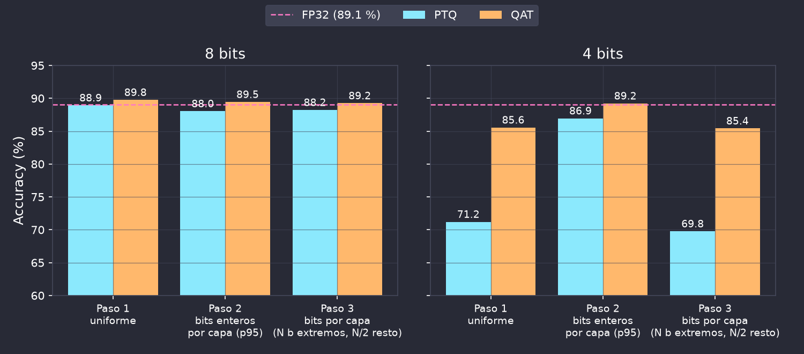
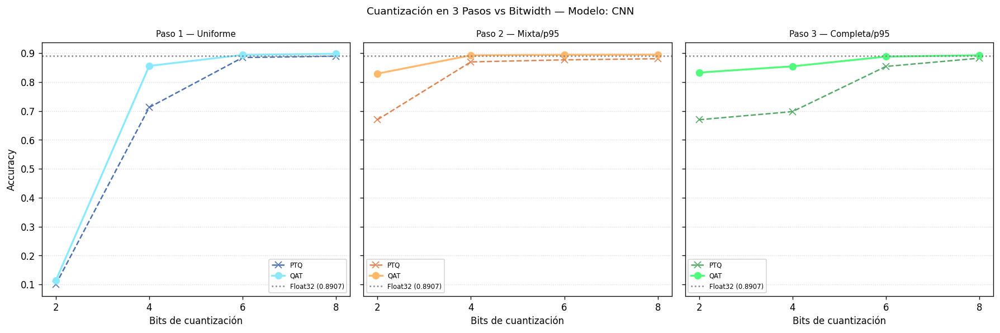

Reducción de la resolución numérica para optimizar la implementación
Representar pesos y activaciones con un conjunto discreto de valores de menor precisión (ej. INT8 en vez de FP32).
xq = clip(round(x / Δ), qmin, qmax) · Δ
Δ es el paso de cuantización (escala); round(x / Δ) es el entero que se
guarda, y el clip lo limita a lo que entra en los bits disponibles.
Beneficios:
Desafíos:
Cuatro pesos, cuantizados con round y tres pasos distintos:
x |
0.30 | 0.80 | 1.45 | 1.90 | Error máx. |
|---|---|---|---|---|---|
| Δ = 1 | 0 | 1 | 1 | 2 | 0.45 |
| Δ = 0.5 | 0.5 | 1 | 1.5 | 2 | 0.2 |
| Δ = 0.125 | 0.25 | 0.75 | 1.5 | 1.875 | 0.05 |
¿Por qué no usar siempre un Δ muy chico?
Con b bits hay solo 2b niveles: el
rango representable es ≈ 2b · Δ. Achicar Δ mejora la resolución pero achica el
rango, y lo que queda afuera satura.
En hardware de punto fijo, Δ es una potencia de 2: Δ = 2−f. Multiplicar por Δ
es correr la coma f lugares (un shift), sin multiplicador.
Con b bits: 1 de signo, i enteros y f = b − 1 − i
fraccionarios. Rango: [−2i, 2i − Δ].
8 bits, bits enteros i |
Δ | Rango | Para valores como... |
|---|---|---|---|
i = 3 |
2−4 = 0.0625 | [−8, 8) | activaciones grandes |
i = 0 |
2−7 ≈ 0.0078 | [−1, 1) | pesos de una capa típica |
i = −2 |
2−9 ≈ 0.0020 | [−0.25, 0.25) | sesgos con máx. 0.13 |
Bits enteros negativos: la coma queda a la izquierda del primer bit, como si hubiera ceros implícitos. Sirven para valores chicos.
Función no decreciente y constante por tramos, que mapea valores continuos a un conjunto finito de niveles:


Simétrica: rango centrado en 0 (ej. INT8 de −127 a 127; ideal para pesos). Asimétrica: agrega un zero-point para rangos no centrados (ej. activaciones ReLU, de 0 a un máximo, en UINT8 de 0 a 255).
Estática: los rangos de las activaciones se fijan antes, en la calibración. Dinámica: se calculan en ejecución, con cada entrada (más precisa, más costosa).
Una escala para toda la red (global) → por tipo de tensor → por capa → por canal. Más fina = mejor adaptación, pero más complejo de implementar.
En cada capa, tres cosas por separado: pesos, sesgos y activaciones. Las activaciones también, porque son la entrada de la capa siguiente.
Cuantización aplicada después del entrenamiento, sin reentrenar el modelo:
✓ Ventajas:
✗ Limitaciones:
Se parte del modelo entrenado y se hace un fine-tuning corto simulando la cuantización, para que el modelo se adapte:
¿Por qué no guardar directamente los pesos cuantizados durante el entrenamiento?
La función de cuantización es no diferenciable: su derivada es 0 en casi todos lados y no está definida en los saltos. El STE usa la identidad en el backward pass:
∂round(x)/∂x ≈ 1


Alternativa: soft quantization, una versión suave que sí tiene derivada.
| Aspecto | PTQ | QAT |
|---|---|---|
| Reentrenamiento | No | Fine-tuning de pocas épocas |
| Precisión alcanzable | Buena a 8 bits | Mejor; suele hacer falta a ≤ 4 bits |
| Datos necesarios | Subconjunto de calibración (puede ser sintético) | Datos reales etiquetados |
| Costo computacional | Bajo | Medio (unas épocas de entrenamiento) |
Regla general: PTQ primero (es casi gratis). Si no alcanza, pasar a QAT.
Reducir bits achica el modelo, pero el tiempo depende de la plataforma:
TP de la edición pasada
CNN de audio en CPU: la versión INT8 ocupó mucho menos, pero tuvo más latencia y más memoria pico que FP32.
La demo
En el ESP32, ESP-DL tiene kernels INT8 (y SIMD en el S3): ahí INT8 sí es mucho más rápido.
Moraleja: medir siempre en la plataforma de destino.
El script examples/quantization/script01.py entrena los
modelos base que sirven de referencia para todos los experimentos de cuantización:
CNN (LeNet-5)
Conv(1→6, 5×5) → pool → conv(6→16, 5×5) → pool →
densas(400→120→84→10)
61.7 k parámetros, 89.1 % en Fashion MNIST.
Se guarda en
models/cnn_baseline.h5.
MLP
Densas(784→256→128→64→10) con ReLU
Se guarda en
models/mlp_baseline.h5.
Punto de comparación para cuantización en capas densas.
Flujo: script01 entrena y
guarda → script02 cuantiza en 3 pasos a un número de bits fijo →
script03 barre los bits → script04 grafica el barrido.
El rango define cuántos niveles caen donde realmente hay valores. Recortar los extremos da pasos más finos donde la distribución es más densa.
Rango completo (±máx.)
Ningún valor satura, pero los pasos son anchos en la zona central.
Recortado (p95)
El rango va del percentil 5 al 95: el 90 % central tiene pasos finos y el ~10 % de los extremos satura.

Paso 1: uniforme
Mismos bits totales y mismos bits enteros en toda la red, tomados del peor caso global (el máximo de todas las capas).
i = ceil(log₂(máx. global))
Paso 2: bits enteros por capa
Mismos bits totales, pero los bits enteros de cada capa salen de su propio rango (máx., p95 o p75).
i[capa] = ceil(log₂(rango[capa]))
Paso 3: bits por capa
Además, distinto total de bits: primera y última capa con N bits, las intermedias con N/2 (bits enteros por capa, p95).
Con N = 8: 8 · 4 · 4 · 4 · 8
Cada paso agrega granularidad: global → por capa (bits enteros) → por capa (bits totales). Se evalúa con PTQ y con QAT (3 épocas).

LeNet-5 en Fashion MNIST (FP32: 89.1 %, 241 KB). A 8 bits los pasos 1 y 2 ocupan 60 KB; a 4 bits, 30 KB; el paso 3 a 4 bits, 15 KB.
examples/quantization/script03.py repite los 3 pasos para
cada cantidad de bits (o de 1 a 16 con --full), con PTQ y QAT; script04.py
grafica el JSON resultante.

Objetivo: el modelo más chico posible que no pierda más de 5 puntos frente a FP32 (accuracy ≥ 84 %).
examples/quantization/script02.py, cambiar
BITS, HIGH_BITS y LOW_BITS (dejar RUN_QAT = False
para que corra rápido).make_default_full_mixed_bits_map(...) por un diccionario
{"conv2d_1": 8, "conv2d_2": 4, ...}.uv run python script02.py cnn y anotar Acc PTQ y
Mem KB.Pistas: la primera y la última capa son las más sensibles; con menos bits, los bits enteros de cada capa importan más.
INT8 da ~2× el throughput de FP16. Una suma INT8 gasta ~30× menos energía que una suma FP32.
Sin FPU rápida, INT8 es casi obligatorio. Con instrucciones SIMD (ESP32-S3, Cortex-M con DSP) se hacen varios MACs de 8 bits por ciclo.
Total flexibilidad de bits por capa; FINN genera aceleradores para redes binarizadas, muy rápidos y eficientes.
El Google Edge TPU, por ejemplo, solo ejecuta INT8: máxima eficiencia, poca flexibilidad.